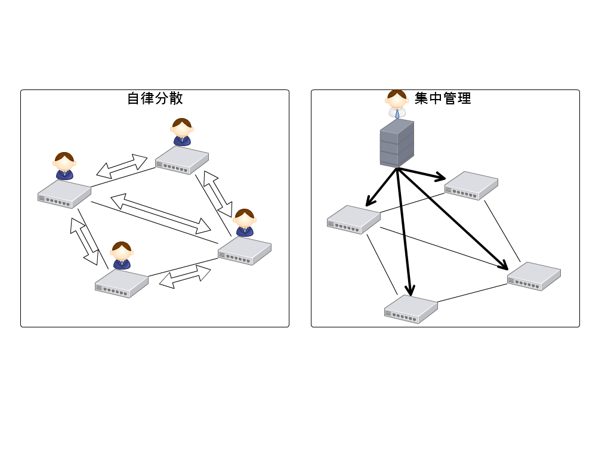
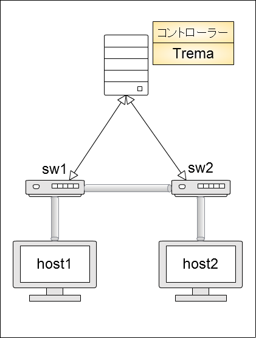
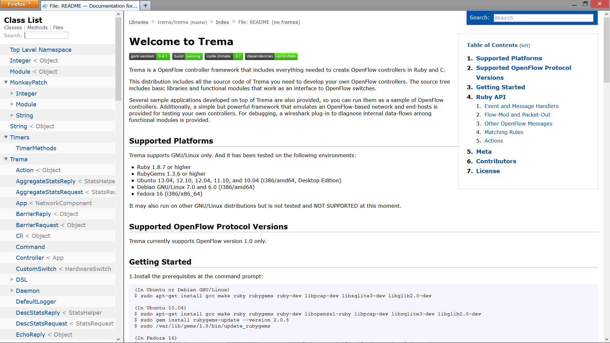
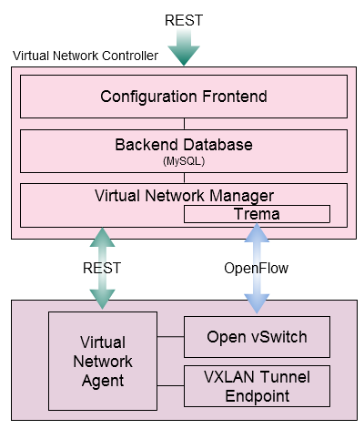

Tremaとは
OpenFlowコントローラーを作成するためのフレームワーク
- 開発言語はRuby and C
- GPLv2ライセンス
- https://github.com/trema
 |
 |
ネットワークをソフトウェアで制御・管理する
物理ネットワーク上に仮想ネットワークを構築する
ネットワーク装置とコントローラー間のインターフェース仕様
ネットワークへの要望
ネットワーク上に散らばるネットワーク機器を一か所で集中管理したい。
回線断時の迂回経路設定等、ネットワーク障害への対応を自動化したい。
ネットワーク構築においてベンダーロックインされたくない。
サーバー仮想化に動的に対応したい。
OpenFlowは、コントローラーがネットワーク全体を俯瞰して経路を決定し、スイッチに経路を通知する集中管理型
ONF(Open Network Foundation)で標準化
2010年 1月
OpenFlow Switch Specification 1.0
2011年 2月
OpenFlow Switch Specification 1.1
2011年12月
OpenFlow Switch Specification 1.2
2012年 4月
OpenFlow Switch Specification 1.3
2013年 8月
OpenFlow Switch Specification 1.4
OpenFlow 1.0
キャンパスネットワークやDC内のネットワークがターゲット
OpenFlow 1.1
DC間やキャリア網をターゲットに追加
OpenFlow 1.2
IPv6をサポート。
OpenFlow 1.3
サポートプロトコルの拡大
QoS対応
OpenFlow 1.4
m(..)m
..., and we’re able to run our wide-area lines at close to 100 per cent utilization, ...
John Dix @itworldca
...従来2週間かかっていたインフラ構築を約10分へと大幅に短縮。
NECビッグローブ株式会社
OpenFlowコントローラーを作成するためのフレームワーク
|
|
| フレームワーク | ver | 言語 | 開発元 | ライセンス |
|---|---|---|---|---|
| Trema | 1.0 | Ruby | Tremaプロジェクト | GPLv2 |
| POX | 1.0 | Python | UCバークレイ | GPLv3 |
| Nox | 1.0 | C++ | Nicira スタンフォード大学 UCバークレイ |
GPLv3 |
| Floodlight | 1.0 | JAVA | Big Switch Network | Apache |
| TremaEdge | 1.3 | Ruby | Tremaプロジェクト | GPLv2 |
Tremaは、はやくて、やすくて、うまい。
はやい
コントローラーを簡単に短く実装できる
やすい
ネットワークエミュレータ機能により高価なスイッチなしに検証できる
うまい
サンプルアプリが豊富
短いコードでコントローラーを素早く開発
class RepeaterHub < Controller
def packet_in datapath_id, message
send_flow_mod_add(
datapath_id,
:match => ExactMatch.from( message ),
:actions => ActionOutput.new( OFPP_FLOOD )
)
send_packet_out(
datapath_id,
:packet_in => message,
:actions => ActionOutput.new( OFPP_FLOOD )
)
end
endネットワークエミュレート機能で高価なスイッチなしで検証
vhost("host1")
vhost("host2")
vswitch("sw1") {
datapath_id "0x1"
}
vswitch("sw2") {
datapath_id "0x2"
}
link "host1", "sw1"
link "host2", "sw2"
link "sw1", "sw2"
|
 |
Trema Ruby API : http://rubydoc.info/github/trema/trema/master/frames
IaaS型のクラウド環境を実現するための基盤ソフト
http://wakame.jp/wiki/
オーバーレイ方式で仮想ネットワークを構築する基盤ソフトウェア。
|  |
|
/
#